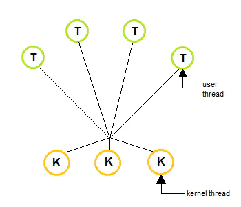
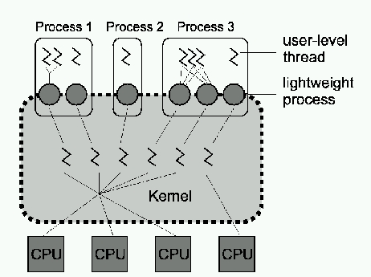
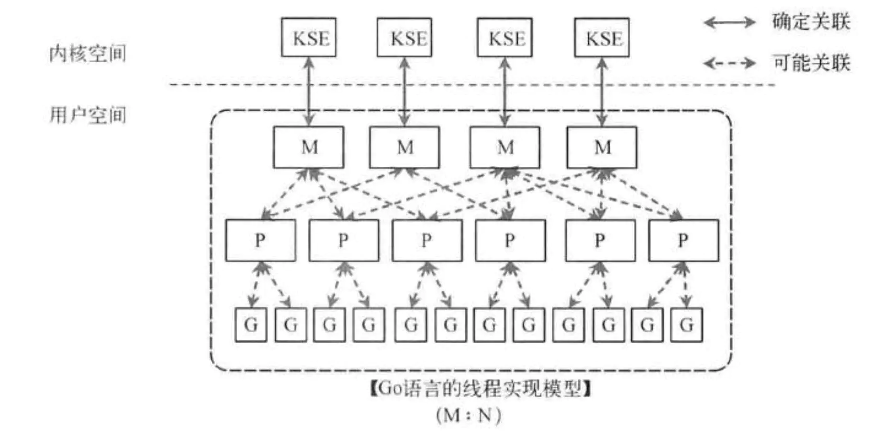

Golang-GMP模型
前言
GMP模型
关于线程和协程
在计算机操作系统中,轻量级进程（LWP）是一种实现多任务的方法。与普通进程相比，LWP与其他进程共享所有（或大部分）它的逻辑地址空间和系统资源；与线程相比，LWP有它自己的进程标识符，优先级，状态，以及栈和局部存储区，并和其他进程有着父子关系；这是和类Unix操作系统的系统调用vfork()生成的进程一样的。另外，线程既可由应用程序管理，又可由内核管理，而LWP只能由内核管理并像普通进程一样被调度。Linux内核是支持LWP的典型例子。

Golang中的模型
有2个支持高并发的模型：CSP和Actor（erlang）。Go选择了CSP，Go为了提供更容易的并发使用方法，提供了2个重要的概念goroutine和channel。
goroutine来自协程的概念，让一组可复用的函数运行在一组线程之上，即使有协程阻塞，该线程的其他协程也可以被runtime调度，转移到其他可运行的线程上。

其实老调度器有4个缺点：详见Scalable Go Scheduler Design Doc
- 创建、销毁、调度G都需要每个M获取锁，这就形成了激烈的锁竞争
- M转移G会造成延迟和额外的系统开销。
- M中的mcache是用来存放小对象的，mcache和栈都和M关联造成了大量的内存开销和差的局部性
- 系统调用导致频繁的线程阻塞和取消阻塞操作增加了系统开销。
所以Go语言在2012年重新设计了调度器方案（Scalable Go Scheduler Design Doc，设计方案）。

关于GMP模型
关于Machine
machine代表一个线程，每次创建一个M的时候，都会有一个底层线程创建；所有的G任务，最终还是在M上执行。
machine的字段多达几十个，但将其进行粗劣的分类是可以明确m的具体职责：
- 特殊g的管理：g0、gsignal、curg
- p的管理：p、nextp、oldp
- 状态管理：locks、preemptoff、mallocing、throwing、dying、incgo、signalPending、blocked
- 锁的管理：lockedg、lockedExt、lockedInt、nextwaitm、waitlock
- cgo运行相关：ncgocall、ncgo、cgoCallersUse、cgoCallers
从字段中可以看出，在m层，主要方向有几个关键词：锁、抢占、cgo、g与p的管理、信号。主要原因还是由于m是一个贴近操作系统的结构体，而操作系统的调度的核心问题也是锁、信号，阻塞等。
如何解决m和m的绑定问题？
创建Machine
创建m的时机有3类：sysmon抢占线程、templateThread模板线程、运行p。前2者是特殊的线程，不会进入调度系统中。创建m的方法是直接调用runtime.newm方法：
1 | func newm(fn func(), _p_ *p) { |
可以看出在m的创建流程中，具体分为2步：结构体的创建、线程的创建。在allocm方法中，核心是需要申请一个m的对象以及相关的g0空间，而针对不同的操作系统，g0的内存空间又区分为是使用系统分配，还是go指定。
1 | func allocm(_p_ *p, fn func()) *m { |
而在runtime.newm1方法中，主要是直接调用runtime.newosproc方法，正如其名，就是用于创建一个系统的线程。
1 | func newm1(mp *m) { |
关于Processor
每一个运行的M都必须绑定一个P，就像线程必须在么一个CPU核上执行一样，由P来调度G在M上的运行，P的个数就是GOMAXPROCS（最大256），启动时固定的，一般不修改；
processor的字段可以分为以下几类：
- 内存管理相关：mcache、pcache、mspancache、palloc
- 调度计数相关：schedtick、syscalltick、sysmontick
- cache相关：deferpool、deferpoolbuf、gFree、sudogcache、sudogbuf
- g调度相关：runqhead、runqtail、runq、runnext
- 定时器相关：timer0When、timersLock、timers、numTimers、adjustTimers、deletedTimers、
- gc相关：gcAssistTime、gcFractionalMarkTime、gcBgMarkWorker、gcMarkWorkerMode、gcMarkWorkerStartTime、gcw、wbBuf、runSafePointFn
这几大方面主要是由于p本身的定位是执行器有关，当执行用户代码时，需要在效率和性能方面做到兼容，
p的创建流程代码并不难懂，方法由procresize来执行，也就是平时大家设置GOMAXPROCS计数，其中涉及到扩容和缩容操作。
关于Goroutine
gorountine也就是平时的协程，每次go调用的时候，都会创建一个G对象，它包括栈、指令指针以及对于调用goroutines很重要的其它信息
gorountine的字段可以分为以下几类：
- 上下文信息：startpc、gopc、sigpc、sched、syscallsp、syscallpc、stktopsp、param
- 抢占相关：preempt、preemptStop、preemptShrink
- 栈相关：stack、stackguard0、stackguard1
- defer相关：_panic、_defer
- 锁相关：waiting、timer、selectDone、
- 信号相关：sigcode0、sigcode1、sigpc
当然，gorountine不仅仅是上述的字段，还有大量的pprof的计数字段，本次暂时不做讨论。
可以看出，g和m的字段中，都有信号、锁、抢占相关的字段，但是，为什么m中却没有栈信息，难道不需要栈信息？这就是g0协程的重要性，golang中为了做权限隔离，避免用户代码影响runtime的运行，专门抽象了g0协程执行。既然无法向操作系统中通过中断实现内核态切换，就考虑使用特殊协程，这样相关上下文切换逻辑是完全复用，所以，g0是一个只做权限隔离的协程，同时所有m都拥有一个g0。
创建Gorountine
创建gorountine就是平时大家使用的go func()关键字。在编译阶段，关键字会变编译为runtime.newproc方法，同时会传入参数大小和函数指针fn。然后从堆栈中获取参数并调用runtime.newproc1方法。
1 | func newproc(siz int32, fn *funcval) { |
在runtime.newproc1方法中具体可以分为3块逻辑：
- gorountine结构体创建
- gorountine对象的初始化
- 插入调度对象并唤醒p
创建完的gorountine结构体最终会插入p中的runq链表中。
调度实现
从m的创建流程中，可以看到newosproc方法是第四个参数，也就是系统线程的入口函数。线程创建完成后，操作系统会根据系统调度算法运行线程，runtime.mstart也就是线程的初始化方法。
线程初始化
runtime.mstart方法中，优先将栈的检查地址更新，这是因为如果是操作系统自动生成的堆栈，线程运行前是无法确定的。之后会调用runtime.mstart1方法执行进一步的初始化方法。最后，针对特殊的线程（被lockg的线程），会执行runtime.mexit方法。
1 | func mstart() { |
继续看runtime.mstart1方法，也还是一系列的初始化方法：
- 保存调用寄存器信息，主要用于当用户g切换至g0时，需要恢复的上下文
- 初始化信号处理方法，因为每个线程都需要自己的信号处理g
- 执行mstartfn方法，这个方法是针对sysmon这类的特殊线程实现的功能，使当前线程不进入调度循环中。
执行完上述的初始化操作后，当前线程就将nextp字段转正进行绑定，并进入runtime.schedule方法中调度。
线程循环
在调用循环中，存在3个因素影响调度：当前是否需要stw、当前是否获取到g、当前m是否被g绑定。三者中获取g是调度循环的主流程，其他2者也是golang的特殊功能。所以先抽离出获取g的整体流程。
获取Gorountine
在获取gorountine流程中，可以分为3部分：
- 若当前p不存在g，或者调度计数满足61次，则从全局中获取g运行
- 产生从p本地队列中获取g
- 本地和全局都获取不到时，则在
findrunable方法中阻塞获取g
1 | func schedule() { |
globrunqget方法
在从全局队列中获取g时，会从全局队列中获取g，并同时迁移1/len(allp)个数的g到本地队列中。
1 | func globrunqget(_p_ *p, max int32) *g { |
runqget方法
而在获取本地队列g的时候，优先会尝试获取runnext字段的g，在从runq中获取头部的g对象。当然由于runq是通过循环队列实现，所以gp是通过下标取余获取。
1 | func runqget(_p_ *p) (gp *g, inheritTime bool) { |
findrunnable方法
由于前2个方法实在获取不到可运行的g，所以在findrunnable方法中会不断的在各个可能存在可运行g的地方查询。具体的查询流程如下：
- 检查finalizer是否存在析构对象
- 检查本地对象是否存在可用g
- 查询全局队列是否存在可用g
- 非阻塞检查netpoll
- 如果大家都空闲中，或者自旋的m超过了忙碌的p，则进入强制查询阶段
- 再不济，随机4次去其他的p中窃取g
上述流程实在找不到，m就不在持有p，然后开始特殊判断阶段。m开始循环判断是否存在可运行的g。判断区域还是从全局队列中、所有p的本地队列中以及netpoll三个方面。最终如果实在获取不到，则休眠当前m，等待有可用的p来唤醒。
执行Gorountine
获取到可执行的g之后，就需要调用runtime.execute方法，主要针对g做一些变量赋值：
1 | casgstatus(gp, _Grunnable, _Grunning) |
赋值完后，会调用runtime.gogo方法进行协程的上下文切换，将原有的g0协程，切换至gp协程。
调度工具
- trace
- pprof
相关主题
- lock ranking
相关链接
https://docs.oracle.com/cd/E19683-01/806-6867/guide-60747/index.html
https://www.linuxjournal.com/article/3184